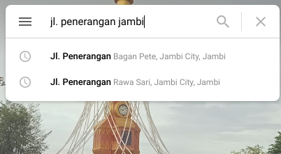
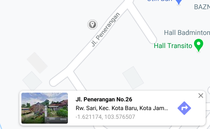
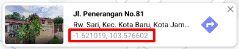
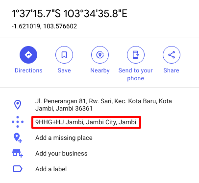
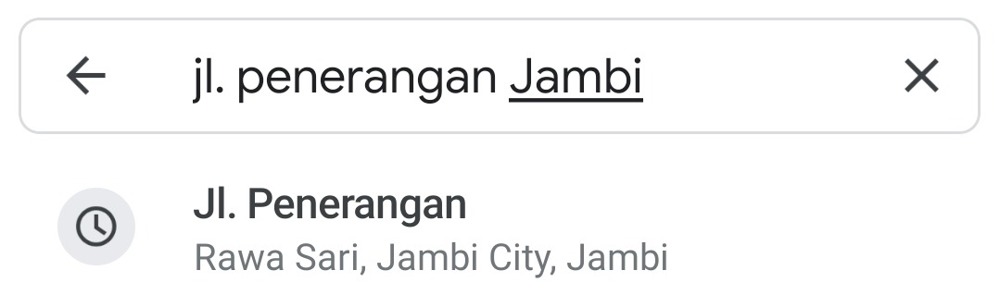
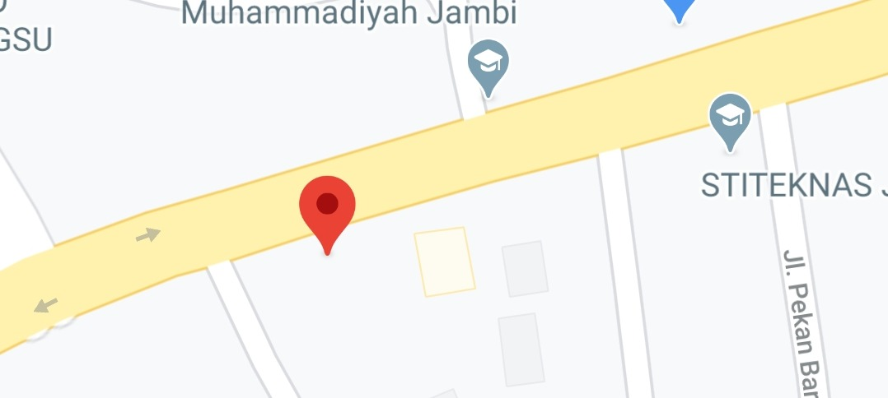
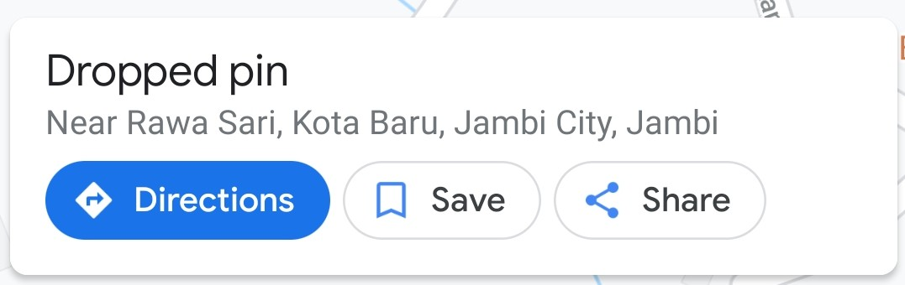
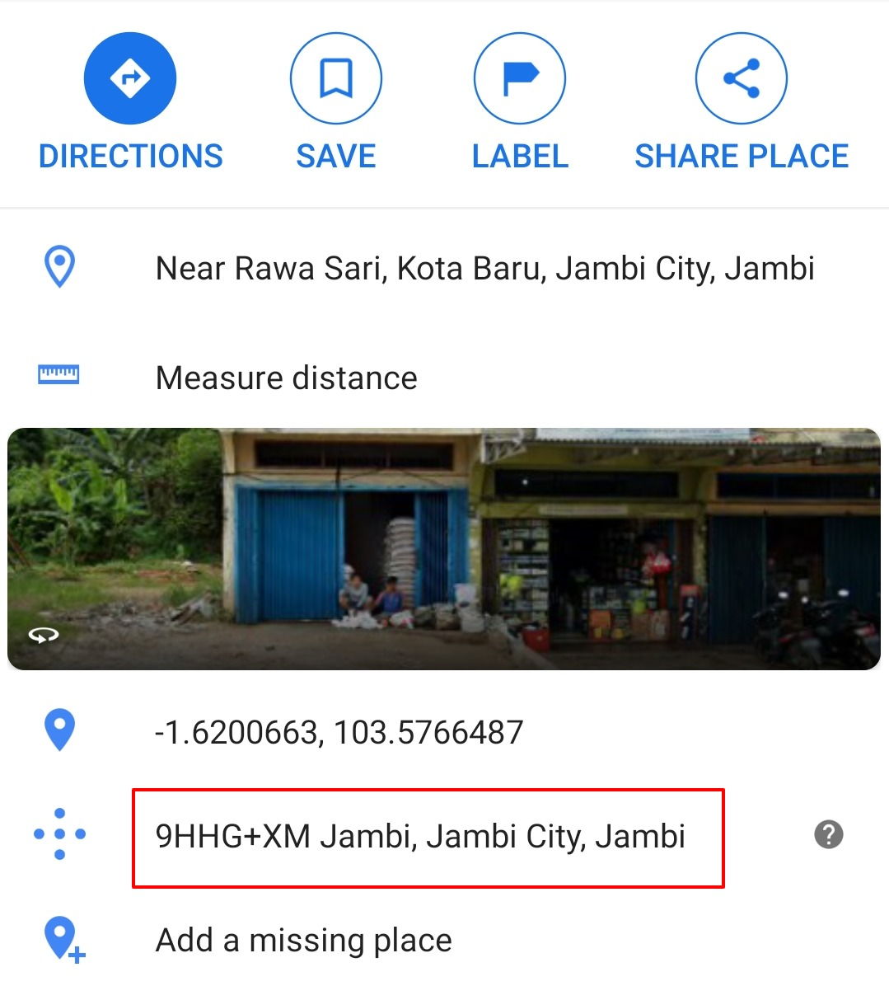

Plus Code
Kode plus berfungsi seperti alamat. Saat sebuah alamat tidak tersedia, Anda dapat menggunakan kode plus untuk menemukan atau membagikan tempat di Google Maps, seperti rumah atau bisnis Anda.
Sebuah kode plus berisi:
- 6 atau 7 huruf dan angka
- Kota
Berikut contoh kode plus: 9J95+Q4 Jambi, Jambi City, Jambi, Indonesia.
Cara menemukan plus code di komputer
Buka Google Maps.
-
Lakukan pencarian dengan memasukkan alamat di kolom cari.
 -
Klik lokasi anda pada peta untuk menjatuhkan pin.
 -
Di bagian bawah, pada kotak info, klik koordinat angka.
 -
Di sebelah kiri, Anda akan melihat kode plus dan info selengkapnya tentang tempat tersebut.

Cara menemukan plus code di perangkat Android
-
Di ponsel atau tablet Android Anda, buka web seluler Google Maps atau aplikasi Google Maps Google Maps.
-
Lakukan pencarian dengan memasukkan alamat di kolom cari.
 -
Tap lama tempat untuk memasang pin di Google Maps.
 -
Di bagian bawah, tap alamat atau deskripsi.
 -
Scroll ke bawah untuk menemukan plus code, seperti 8439VCW3V+PG.

Untuk informasi lebih lanjut mengenai plus code, kunjungi laman berikut.